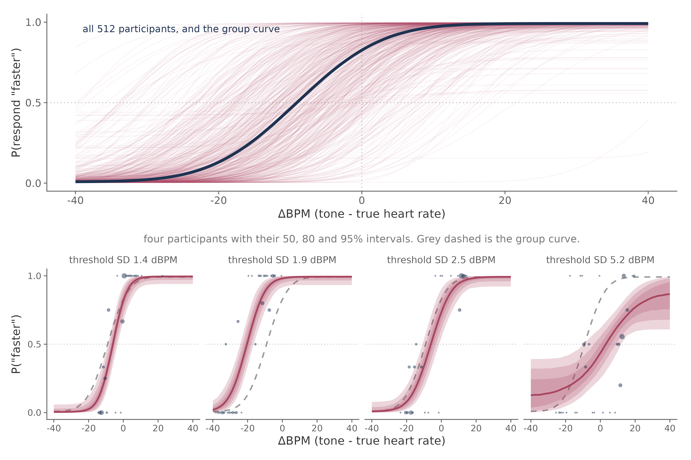
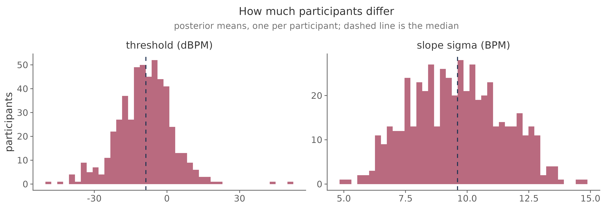
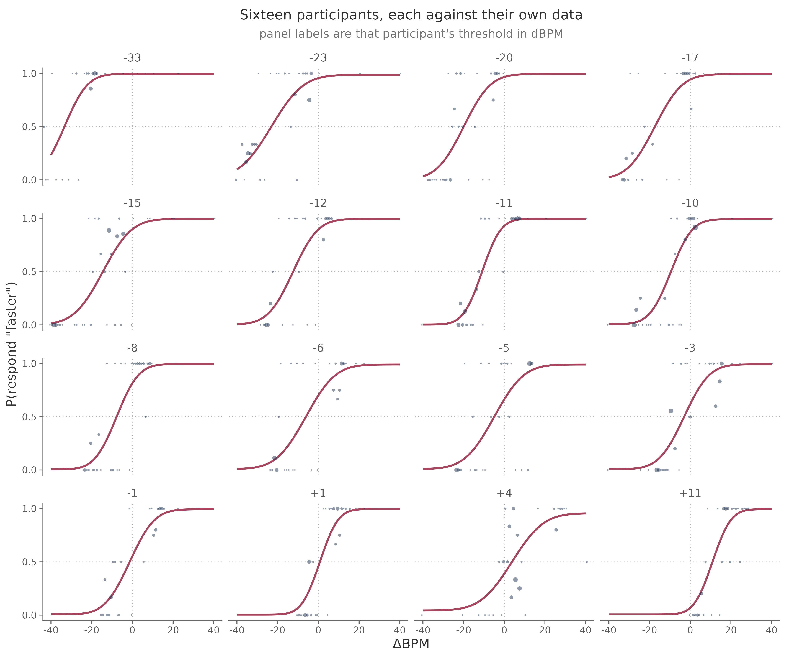
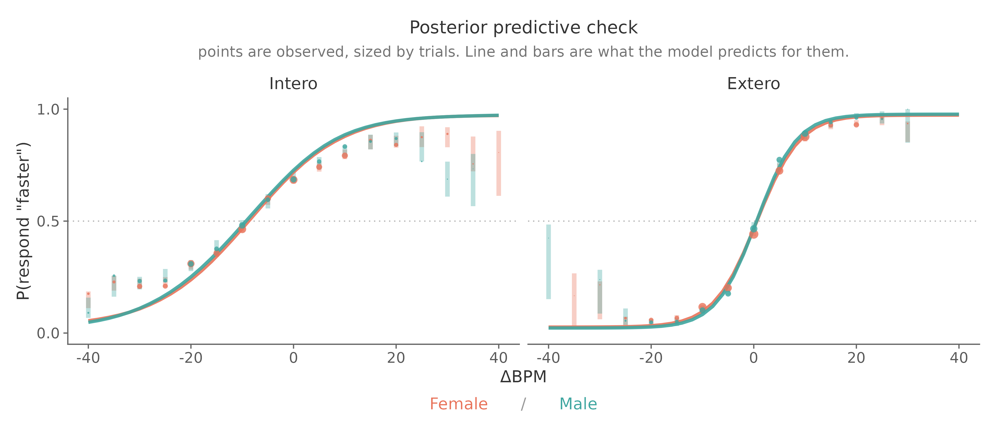
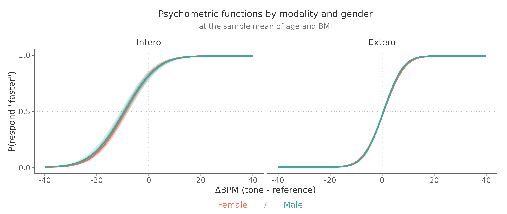
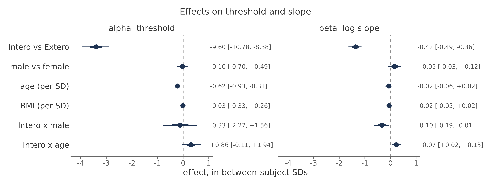
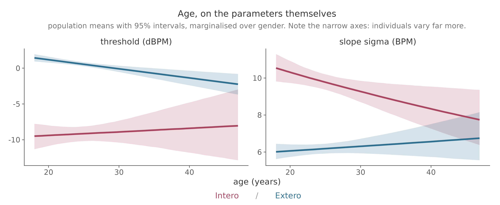
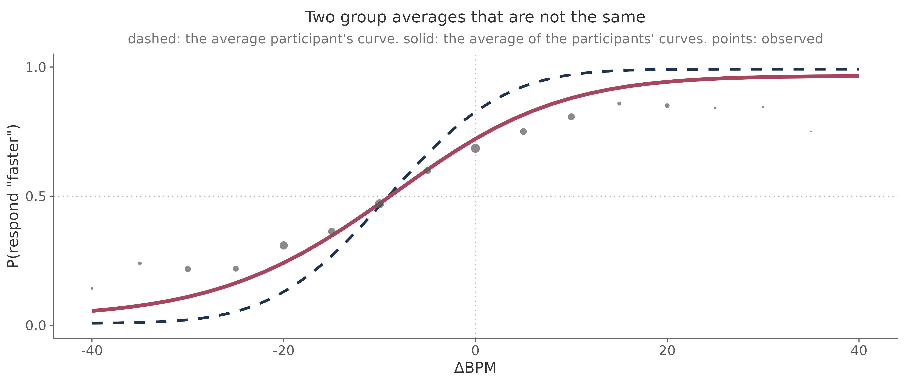

Hierarchical modelling#
Fitting every participant in one model, and testing whether a covariate or a group membership moves interoceptive bias or precision.
This is the tutorial most studies need. It assumes the psychophysical model and the data preparation from inspecting and plotting data.
Why one model rather than many#
The staircase gives each participant few trials far from their threshold, so individual slopes are poorly constrained. Fitting separately and then testing the point estimates treats a barely identified slope as if it were known exactly.
A hierarchical model draws each participant’s parameters from a group distribution, so every participant is fitted in the same pass that estimates the group, and each one’s uncertainty travels through to the group-level effects instead of being discarded halfway.
Both halves of that are in one picture.

The top panel is the group curve, estimated from all 512 participants at once and drawn over them. Below it are four of those participants with their own posterior intervals, and the group curve behind each in grey.
The widths are the thing to notice. The leftmost participant’s threshold is pinned to about 1.4 ΔBPM and the rightmost to 5.2, and across all 512 the range runs from 1.1 to 17.2. The model carries that difference into the group estimate. Fit everyone separately and feed the point estimates into a t-test, and a threshold known to ±1 counts the same as one barely known at all.
The spread across participants comes out as a parameter too, rather than as a nuisance:

Participants differ from one another far more than the conditions differ from each other, and that width is the yardstick every group effect below is measured against.
bff <- bf(
y | trials(n) ~ inv_logit(lambda) / 2 +
(1 - inv_logit(lambda)) * (0.5 + 0.5 * erf(exp(beta) * (x - alpha) / sqrt(2))),
alpha ~ 1 + (1 | subj),
beta ~ 1 + (1 | subj),
lambda ~ 1 + (1 | subj),
nl = TRUE,
family = binomial(link = "identity")
)
Adding your design#
Predictors go on alpha and on beta, separately. Put them on both even when your
hypothesis concerns only one: an effect that looks like a threshold shift in a
threshold-only model can turn out to be a slope effect once both are free to move.
The rule that governs the random effects: a term gets a random slope only if it varies within a participant.
What you are testing |
Formula for |
|---|---|
Nothing, just the population |
|
Intero vs Extero, pre vs post, drug vs placebo |
|
Patients vs controls, or gender |
|
Age, BMI, a questionnaire score |
|
A covariate and a group and a within-subject condition |
|
Whether an effect is specific to interoception |
|
(gender | subj) is a specification error. A participant has one gender, so there
is no within-subject variance for the model to find. It does not raise an error: it
produces divergent transitions and group SDs pinned near zero, which is a much
worse way to discover the problem.
Centre continuous covariates, or the intercept becomes the threshold of a participant aged zero:
model_df$age_z <- as.numeric(scale(model_df$age))
model_df$bmi_z <- as.numeric(scale(model_df$bmi))
Scale them over participants, not over trials, or people with more trials pull the mean.
The worked model#
The example study has both conditions, gender as a between-subject factor, and age and BMI as subject-level covariates. All of it goes in one model, because covariates only control for each other when they are fitted together:
alpha ~ Modality * (gender + age_z) + bmi_z + (Modality | subj)
beta ~ Modality * (gender + age_z) + bmi_z + (Modality | subj)
lambda ~ 1 + (1 | subj)
Reading that formula: Modality is within-subject and gets a random slope. gender
is between-subject and does not. age_z and bmi_z are subject-level covariates.
The Modality interactions ask the question that matters for an interoception
claim: does the effect appear specifically when judging one’s own heart, or does it
show up in the auditory control condition too? An effect present in both is telling
you something about the task, not about interoception.
BMI enters as a main effect only. It is there as a control, not as a hypothesis.
Priors#
Every predictor needs its own prior. A prior naming a coefficient brms does not generate is silently ignored, and that coefficient then samples under a flat default. Check what you actually specified:
get_prior(bff, model_df)
The intercept priors come from the population refit in Courtin et al. (2026). Effect priors are centred on zero and scaled to the between-subject SD of the parameter, with narrower scales where a wide one would be implausible:
set_prior("normal(0, 11.23)", class = "b", nlpar = "alpha", coef = "genderMale")
set_prior("normal(0, 5.62)", class = "b", nlpar = "alpha", coef = "age_z")
set_prior("normal(0, 2.81)", class = "b", nlpar = "alpha", coef = "ModalityIntero:genderMale")
The logic: a difference between two groups could plausibly be about as large as the spread between individuals, so a binary contrast gets the full SD. A per standard deviation of age effect that large would not be plausible, so it gets half. An interaction is a difference of differences, so it gets less again.
Check the choice rather than trusting it. Sampling with the likelihood switched off shows what the priors alone imply:
fit_prior <- brm(bff, data = model_df, prior = priors, sample_prior = "only", ...)
If most of the prior mass puts thresholds outside the range of intensities the task can present, the prior is asserting something the experiment could never show.
Fitting#
fit <- brm(
bff, data = model_df, prior = priors,
chains = 4, cores = 4,
warmup = 2000, iter = 4000,
control = list(adapt_delta = 0.95, max_treedepth = 12),
backend = "cmdstanr",
file = "fit_hrd"
)
Set file. It caches the fit, so an accidental rerun does not resample for hours.
Expect hours on a laptop. A few dozen participants is tens of minutes; several hundred with covariates is an overnight job. Develop the pipeline on a handful of participants with short chains first, confirm it runs end to end, and only then start the real fit.
The fits behind this page took 4 to 31 minutes each, but that was 8 chains across
128 cores on a compute node, with within-chain threading. The useful lever there is
threads = threading(n), which splits the likelihood within each chain rather than
adding more chains: the likelihood runs over tens of thousands of aggregated cells,
so it parallelises well, while chains past about 8 mostly buy redundant samples.
fit <- brm(..., chains = 4, cores = 4, threads = threading(2), backend = "cmdstanr")
Count your real cores before setting this. chains * threads above the core count
oversubscribes and runs slower than leaving it alone.
Checking, in this order#
Divergent transitions. Any at all means the sampler is not exploring the posterior properly. Raise
adapt_deltato 0.99. If they persist, look at the formula before the sampler, and check for a random slope on a between-subject term.rhat < 1.01, with bulk and tail ESS in the hundreds at least.Posterior predictive checks, and predicted curves against observed proportions for a few individual participants.
Only then read the coefficients.
On the third, do both of these.
Each participant against their own data. Plot every participant’s fitted curve over that participant’s own trials. This is the check the Hierarchical Interoception toolbox recommends, and it is the one to trust: nothing is pooled, so what you see is the fit and nothing else.

cf <- coef(fit)$subj[, "Estimate", ] # each participant's own parameters
Look for curves that sit away from their points, and for participants whose data cannot constrain a curve at all. A handful of imperfect panels in a sample this size is normal.
The group, against pooled data. Bin the observed proportions and ask the model what it predicts for those same bins.

Points are observed; the line and bars are what the model predicts for them. On the worked model 60 of 61 bins fall inside their 95% interval, and the one that misses does so by 0.003.
Use posterior_predict() for those bars, not posterior_epred(). The expectation
carries uncertainty in the mean but no binomial sampling noise, so as a predictive
interval it is far too narrow in thinly sampled bins and will report misfit that is
nothing but noise.
Generate the prediction over the participants and trials that actually produced
each bin, which is what posterior_predict(fit) does by default. Predicting from
population parameters alone answers a different question, and
the note at the end of this page explains why that matters here.
What the worked model found#
Fitted to 512 participants in both conditions. The auditory condition is the
reference level, so alpha_Intercept is the exteroceptive threshold and
alpha_ModalityIntero is the shift when judging one’s own heart.

Term |
Estimate |
95% CI |
|---|---|---|
|
+0.60 ΔBPM |
[0.24, 0.97] |
|
−9.60 ΔBPM |
[−10.77, −8.37] |
|
−0.09 |
[−0.69, 0.49] |
|
−0.62 per SD |
[−0.94, −0.32] |
|
−0.03 |
[−0.33, 0.26] |
|
−0.42 |
[−0.48, −0.36] |
|
−0.10 |
[−0.196, −0.014] |
|
+0.07 |
[0.020, 0.124] |
Two things to read off it. Judgements about tones are close to accurate, while judgements about one’s own heart sit about 9.6 BPM below the truth. And interoception is the less precise of the two: σ is roughly 6.3 BPM for tones against 9.6 BPM for the heart.

Why the interaction earns its place#
Fitting the same predictors without their Modality interactions gives a tidy and
completely misleading answer about gender:
Effect on slope |
Main effects only |
With the interaction |
|---|---|---|
|
−0.0007 [−0.060, 0.060] |
+0.05 [−0.025, 0.125] |
|
not estimated |
−0.10 [−0.196, −0.014] |
In the main-effects model the gender term is almost exactly zero. Not “small”: zero to four decimal places, with an interval tight around it. It is tempting to report that as a clean null.
It is zero because two opposing effects are being averaged. Men are slightly more precise than women in the auditory condition and less precise in the cardiac one, and a model with one gender term per parameter has nowhere to put that except in the average, where it cancels. Age does the same thing on the slope.
This is why the table in Adding your design suggests
interacting your grouping variable with Modality whenever you have both
conditions. The auditory condition is not a formality: an effect that appears in
both is telling you something about the task rather than about interoception.
A continuous covariate#
Age is the one covariate here with an effect on threshold, and it is easier to read on the parameters themselves than from a stack of overlapping sigmoids.

Read this one carefully, because the main effect on its own would mislead you.
alpha_age_z is −0.62 per SD [−0.94, −0.32], and that is the effect in the
auditory condition, which is the reference level. The auditory line falls with
age. The cardiac line does not: the interaction (+0.86 [−0.11, +1.94]) roughly
cancels the main effect, leaving it flat or slightly rising.
So “thresholds decrease with age” would be a true statement about the reference level presented as a statement about interoception. That interaction interval does span zero, so treat the divergence as suggestive rather than established — but not as absent, which is what quoting the main effect alone would imply.
The slope panel is the cleaner case, and there the interaction is established (+0.07 [0.020, 0.124]): cardiac precision improves with age while auditory precision does not move.
Note the axes. Both panels span a few ΔBPM, while individual participants range across tens. These are population means, and a real effect on a group mean can be small next to the spread it sits inside.
A flat line is a result, not a missing finding. BMI produces one, and it is worth showing: it is a control, and the model says it controls for very little.
Reporting#
Give posterior means with credible intervals. For a directional claim, the posterior probability is more informative than whether an interval excludes zero:
hypothesis(fit, "alpha_genderMale > 0")
mean(as_draws_df(fit)$b_alpha_genderMale > 0)
Report threshold and slope together, and say which condition an effect appeared in. “Gender affected interoceptive bias” means something quite different depending on whether the same difference showed up in the auditory control.
A note on group curves#
You can skip this on a first reading. It matters when you draw a group-level curve yourself and wonder why the data will not sit on it.
There are two different “group curves”, and they answer different questions:
The curve of the average participant. Take the population-level
alpha,betaandlambdaand push them through the likelihood. In brms,re_formula = NA. This is what the group-level coefficients describe, so it is the curve to put beside a table of effects, and it is what the figure above shows.The average of the participants’ curves. Predict each participant’s own curve, then average those. This is what pooled observed data estimate, because every trial in the pool belongs to a real participant.
They are not the same, because the curve is not a straight line. Averaging many sigmoids that sit at different thresholds gives something shallower than one sigmoid at their mean threshold: Jensen’s inequality, the same reason the mean of \(e^x\) is not \(e^{\text{mean}(x)}\).

How far apart they fall depends on how much participants differ, which is why this bites in the cardiac condition and barely shows in the auditory one:
Condition |
Between-participant SD of threshold |
Largest gap between the curves |
|---|---|---|
Auditory |
2.44 ΔBPM |
0.026 |
Cardiac |
10.97 ΔBPM |
0.099 |
The practical consequence is short: do not judge fit by laying pooled data over a population curve. Compare each participant to their own curve, or compare pooled bins to a prediction made over the participants and trials that produced them. Both are in Checking.
One more thing works this way in the HRD specifically. The staircase concentrates trials near each participant’s own threshold, so a bin at an extreme ΔBPM is made up of whoever happened to have a threshold out there rather than a fair sample of the group. A prediction over the real trials carries that; a smooth curve cannot.